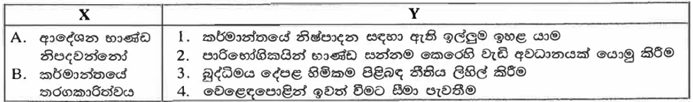

ව්යාපාර අධ්යයනය 2015 — I කොටස
අ.පො.ස. (උසස් පෙළ) MCQ 30 ප්රශ්න පත්රය සහ නිවැරදි විග්රහයන්
🚀 පරීක්ෂණය ආරම්භ කරන්න (Start Quiz)
ප්රශ්නය 1 / 30
⏱️ 00:00
⬅️ පෙර
ඊළඟ ➡️
0 / 30
🔄 නැවත උත්සාහ කරන්න
📑 ප්රධාන මෙනුවට